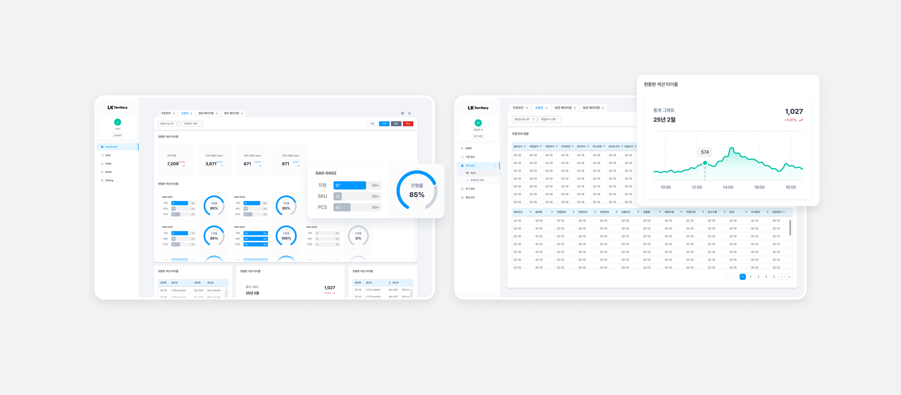
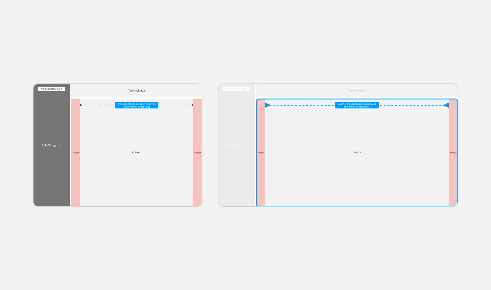
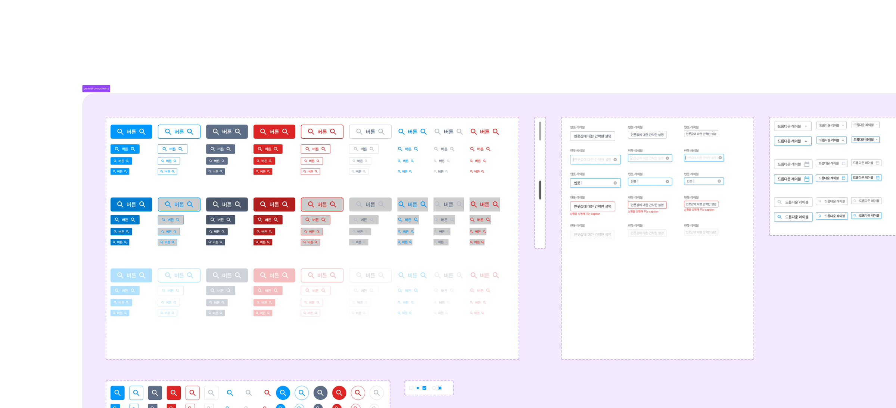
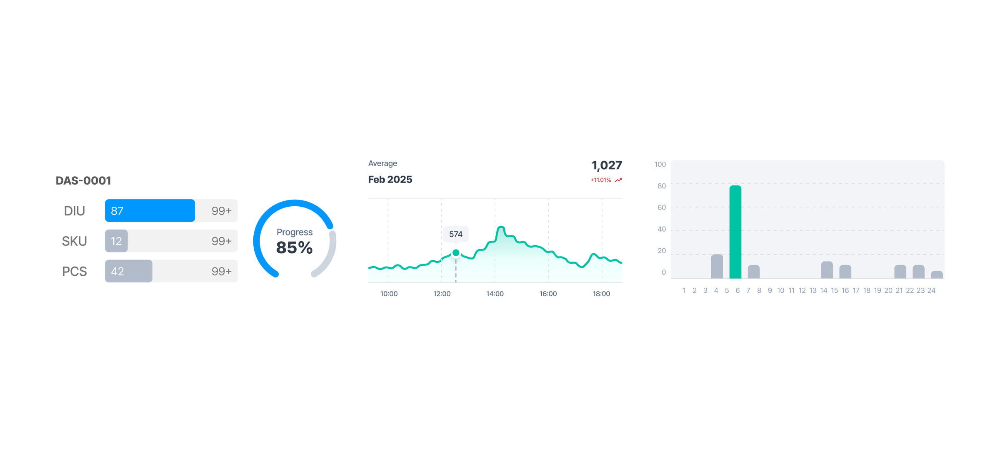
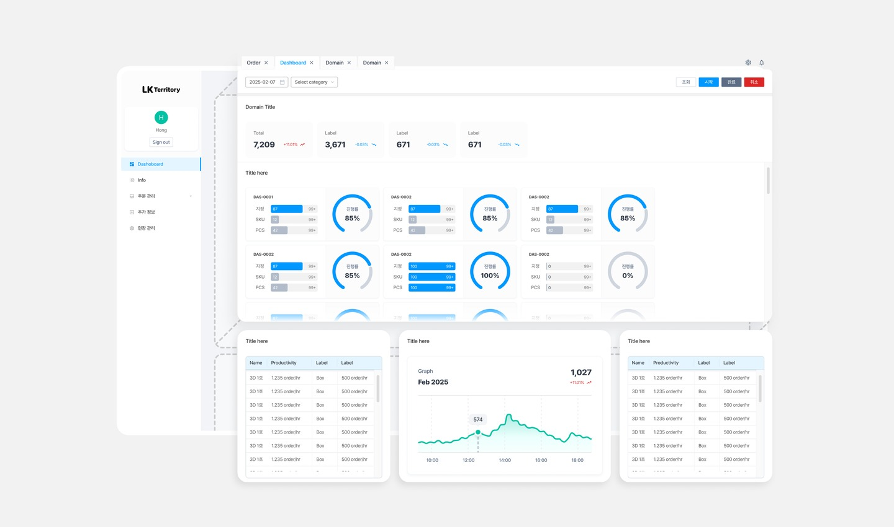
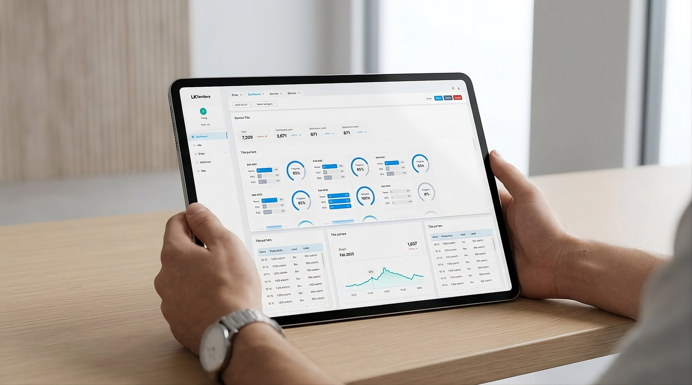
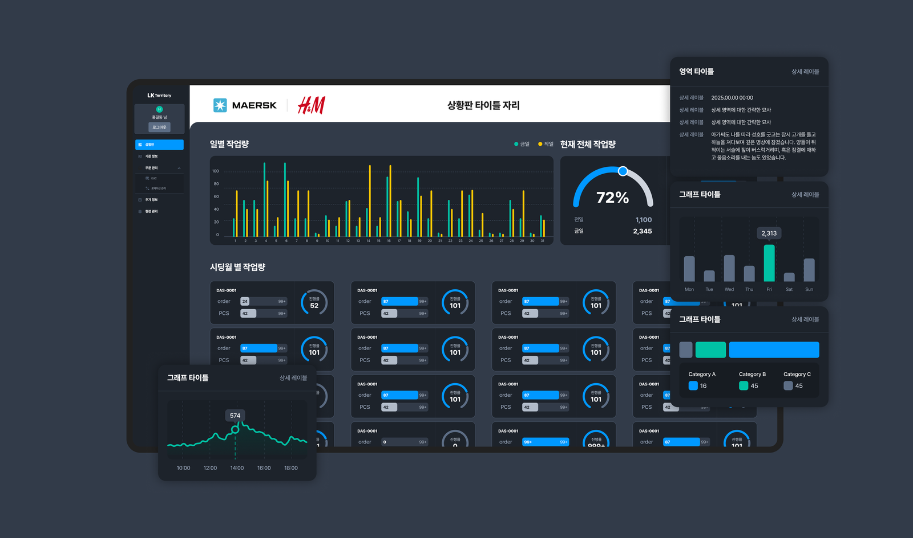
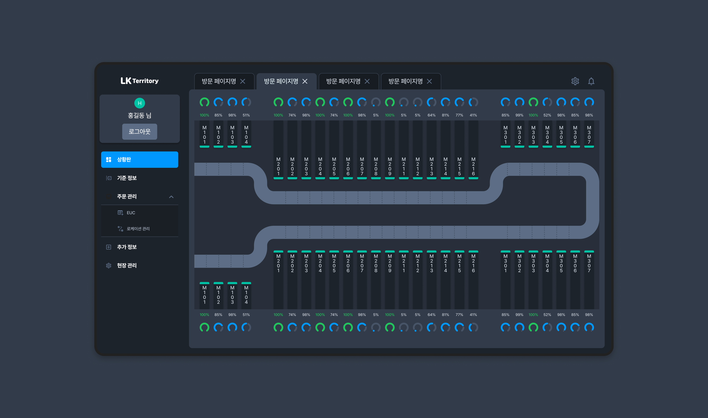
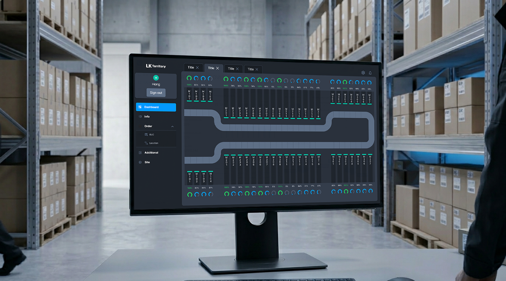
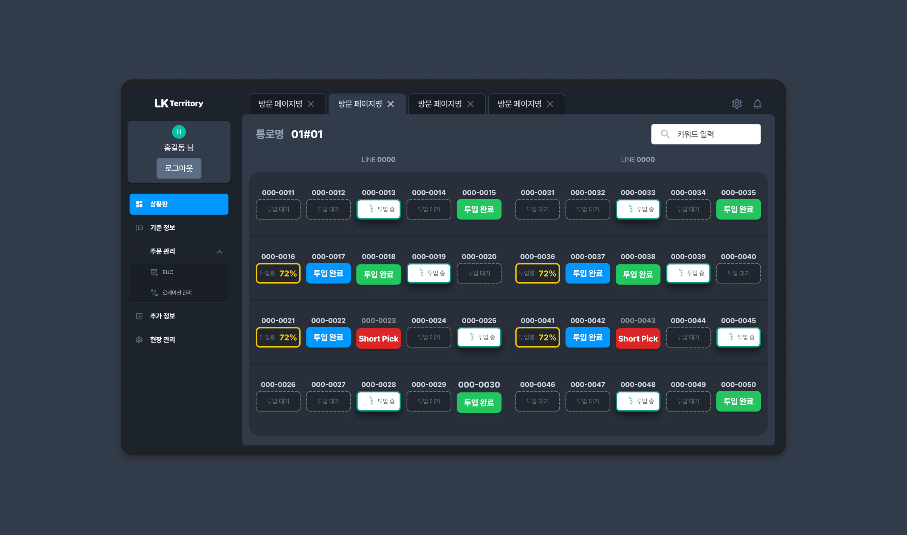

B2B · SaaS · Dashboard
LK Territory — Dashboard Framework
for Fulfillment Industry

Outcome
27
Screens designed — doubled to 54 total via Figma Variables for Hyundai Auto-ever client
½ day
Time to adapt full design for a second client — using Variable-driven theming, not redesign
14×2
Component types shipped — one kit, two clients, via Figma Variable JSON handoff
A modular dashboard framework for LK Territory's B2B warehouse operations — built on a Figma Variable system that made adapting the full design for a second client, Hyundai Auto-ever, possible in half a day without restructuring any component.
Context
LK Territory provides B2B SaaS solutions for warehouse operations — Warehouse Control Systems (WCS) and Warehouse Management Systems (WMS). The dashboard is used by on-site supervisors and operators who need real-time visibility into supply status, task flow, and fulfillment throughput.
The existing wireframes had no shared layout framework, grid system, or component structure — each screen was built independently. The project goal was to deliver a dashboard framework that could be templated and adapted across multiple client deployments, starting with a general case and extending to Hyundai Auto-ever as a second client.
Lead Designer across the full process — auditing the original wireframes, proposing structural improvements, establishing the layout system and component library, and delivering production-ready UI for developer handoff. Worked directly with the development team to ensure the Figma Variable structure mapped cleanly to implementation.
Design Approach
The first task was auditing the original wireframes before any design work. The screens had been built individually with no shared spatial rules — headers, sidebars, and content areas were positioned differently across views. Establishing a common grid system was the prerequisite before building any component or screen.
I defined a 12-column responsive grid with standardized gutters and breakpoints as the shared layout baseline. Every screen — regardless of data type or density — inherits this structure, which keeps the spatial logic consistent across views and makes the framework extensible for new screens.
Design Principle
The key metrics — status, throughput, exceptions — are surfaced at the top level of each view. Detailed data is accessible within the same screen through consistent panel and table structures, without navigating to separate pages. This keeps the interface readable at a glance while retaining the depth operators need.

Component System
The component library was built before any screen work — 14 types across three categories, each connected to the Figma Variable system. This sequencing was intentional: the framework needed to be reusable across client deployments, so the component structure had to be stable before screens were assembled on top of it.
UI Components · 14 types
General · Data Display · Feedback
- General — inputs, buttons, navigation
- Data Display — tables, cards, status indicators
- Feedback — alerts, toasts, empty states
- All screens assembled without one-off components

Data Visualization
Graph components for operational monitoring
- Designed to give on-site workers a quick read of supply flow and task status
- Focused on clarity over density, consistent label placement across chart types

Figma Variables — Multi-client Adaptation
All components were connected to a Figma Variable system covering 103 tokens — font, spacing, border, and color palette (brand + semantic). When Hyundai Auto-ever came in as a second client with different brand specifications, adapting the full design was done by switching the variable set rather than modifying individual components. The Hyundai Auto-ever variant was completed in half a day.
A Variable JSON file was delivered alongside the Figma handoff so the development team could map design tokens directly into code.
Screens
With the grid and component library defined, screen production was an assembly process using the established system. Each dashboard view shares the same spatial structure — persistent sidebar, top bar for context and filters, and a content area that adapts by data type: tabular for inventory, chart-based for throughput, card-based for task queues.

The logistics dashboard is used by on-site supervisors managing multiple fulfillment lines simultaneously. The layout prioritizes status visibility — key metrics are surfaced at the top level, with detailed data accessible within the same view through consistent table and panel structures.





Reflection
Beginning with a wireframe audit before any design work was the right sequencing — the structural inconsistencies in the original screens would have propagated across every view if carried forward. Establishing the grid and layout system first gave the component work and screen production that followed a stable foundation.
The Figma Variable structure also produced a direct result: the Hyundai Auto-ever adaptation was completable in half a day precisely because the token system had been set up from the start, not retrofitted. That outcome validated the upfront investment in system architecture.
One thing I'd do differently: push for a broader component set from the beginning. The 14 types shipped covered the initial scope, but as additional screen types were requested later, the gaps in the library created extra work that a more complete foundation would have prevented.